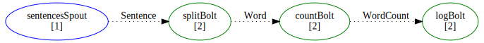
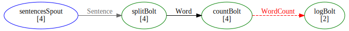
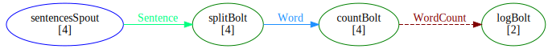

Defining the schema
FsShelter uses F# discriminated unions to statically type streams:
1: 2: 3: 4: 5: |
|
Defining unreliable spouts
FsShelter spouts can be implemented as "reliable" or "unreliable".
Either implementation is a single function, returning an async option, where None indicates there's nothing to emit from this spout at this moment:
1: 2: |
|
Defining bolts
A couple of examples of FsShelter bolts that read a tuple and emit another one:
1: 2: 3: 4: 5: 6: 7: 8: 9: 10: 11: 12: 13: |
|
And a terminating bolt that reads a tuple, but doesn't emit anything:
1: 2: 3: 4: 5: |
|
We will pass these implementations into the component functions when we put things together in a topology definition.
1: 2: 3: 4: 5: 6: 7: 8: 9: 10: 11: 12: 13: 14: 15: 16: |
|
Using F# DSL to define a topology
A typical (event-streaming) Storm topology is a graph of spouts and bolts connected via streams that can be defined via a topology computation expression:
1: 2: 3: 4: 5: 6: 7: 8: 9: 10: 11: 12: 13: 14: 15: 16: 17: 18: 19: 20: 21: 22: 23: 24: 25: 26: 27: 28: 29: 30: 31: 32: 33: |
|
Here we define the graph by declaring the components and connecting them with arrows. The lambda arguments for the "run" methods provide the opportunity to carry out construction of the arguments that will be passed into the component functions, where:
logis the Storm log factorycfgis the runtime configuration passed in from Stormtupleis the instance of the schema DU coming inemitis the function to emit another tuple
log and cfg are fixed once (curried) and as demonstrated in the logBolt's mkArgs lambda, one time-initialization can be carried out by inserting arbitrary code before tuple and emit arguments.
This initialization will not be triggered unless the task execution is actually requested by Storm for this specific instance of the process.
Submitting the topology for execution
Storm accepts JARs for code distribution and FsShelter provides functions to package our assemblies and upload them to Nimbus.
Once the code is uploaded, Storm needs to be told how to run it and FsShelter has functions that convert the above representation into that of Nimbus API.
Storm then starts the supervising processes across the cluster and spins up a copy of our executable for each task instance in our topology.
FsShelter's Task will perform the handshake that will determine which component a given process instance has been assigned to execute:
1: 2: 3: |
|
Then the execution will be handed over to one of the corresponding "dispatchers", which will handle the subsequent interaction between Storm and the component function.
Keep in mind that:
- STDIN/STDOUT are reserved for communications with Storm and any IO the component is going to do has to go through some other channel (no console logging!).
- out of the box Storm only supports JSON multilang. For faster IO, consider ProtoShell. The serilizer JAR can be bundled along with the submitted topology or deployed in Storm's classpath beforehand.
Exporting the topology graph
FsShelter includes a completely customizable GraphViz (dot) export functionality. Here's what the word count topology looks like with default renderers:

The dotted lines represent "unanchored" streams and the number inside the [] shows the parallelism hint.
This was achived by a simple export to console:
1:
|
|
Followed by further conversion into a desired format, piping the markup into GraphViz:
1:
|
|
It is also possible to generate graphs with colour-coded streams:
1:
|
|

Alternatively, you can provide your own X11 colour scheme:
1: 2: 3: |
|

String.Split(separator: string [], options: StringSplitOptions) : string []
String.Split(separator: char [], options: StringSplitOptions) : string []
String.Split(separator: char [], count: int) : string []
String.Split(separator: string [], count: int, options: StringSplitOptions) : string []
String.Split(separator: char [], count: int, options: StringSplitOptions) : string []
Full name: Microsoft.FSharp.Collections.Seq.map
Full name: Microsoft.FSharp.Collections.Seq.iter
type Random =
new : unit -> Random + 1 overload
member Next : unit -> int + 2 overloads
member NextBytes : buffer:byte[] -> unit
member NextDouble : unit -> float
Full name: System.Random
--------------------
Random() : unit
Random(Seed: int) : unit
Random.Next(maxValue: int) : int
Random.Next(minValue: int, maxValue: int) : int
type ConcurrentDictionary<'TKey,'TValue> =
new : unit -> ConcurrentDictionary<'TKey, 'TValue> + 6 overloads
member AddOrUpdate : key:'TKey * addValueFactory:Func<'TKey, 'TValue> * updateValueFactory:Func<'TKey, 'TValue, 'TValue> -> 'TValue + 2 overloads
member Clear : unit -> unit
member ContainsKey : key:'TKey -> bool
member Count : int
member GetEnumerator : unit -> IEnumerator<KeyValuePair<'TKey, 'TValue>>
member GetOrAdd : key:'TKey * valueFactory:Func<'TKey, 'TValue> -> 'TValue + 2 overloads
member IsEmpty : bool
member Item : 'TKey -> 'TValue with get, set
member Keys : ICollection<'TKey>
...
Full name: System.Collections.Concurrent.ConcurrentDictionary<_,_>
--------------------
Collections.Concurrent.ConcurrentDictionary() : unit
Collections.Concurrent.ConcurrentDictionary(collection: Collections.Generic.IEnumerable<Collections.Generic.KeyValuePair<'TKey,'TValue>>) : unit
Collections.Concurrent.ConcurrentDictionary(comparer: Collections.Generic.IEqualityComparer<'TKey>) : unit
Collections.Concurrent.ConcurrentDictionary(concurrencyLevel: int, capacity: int) : unit
Collections.Concurrent.ConcurrentDictionary(collection: Collections.Generic.IEnumerable<Collections.Generic.KeyValuePair<'TKey,'TValue>>, comparer: Collections.Generic.IEqualityComparer<'TKey>) : unit
Collections.Concurrent.ConcurrentDictionary(concurrencyLevel: int, collection: Collections.Generic.IEnumerable<Collections.Generic.KeyValuePair<'TKey,'TValue>>, comparer: Collections.Generic.IEqualityComparer<'TKey>) : unit
Collections.Concurrent.ConcurrentDictionary(concurrencyLevel: int, capacity: int, comparer: Collections.Generic.IEqualityComparer<'TKey>) : unit
Collections.Concurrent.ConcurrentDictionary.GetOrAdd(key: string, valueFactory: Func<string,int64 ref>) : int64 ref
Collections.Concurrent.ConcurrentDictionary.GetOrAdd<'TArg>(key: string, valueFactory: Func<string,'TArg,int64 ref>, factoryArgument: 'TArg) : int64 ref
static member Add : location1:int * value:int -> int + 1 overload
static member CompareExchange : location1:int * value:int * comparand:int -> int + 6 overloads
static member Decrement : location:int -> int + 1 overload
static member Exchange : location1:int * value:int -> int + 6 overloads
static member Increment : location:int -> int + 1 overload
static member MemoryBarrier : unit -> unit
static member Read : location:int64 -> int64
Full name: System.Threading.Interlocked
Threading.Interlocked.Increment(location: byref<int>) : int
from FsShelter
Full name: FsShelter.DSL.Spout.runUnreliable
Full name: FsShelter.DSL.Bolt.run
type Process =
inherit Component
new : unit -> Process
member BasePriority : int
member BeginErrorReadLine : unit -> unit
member BeginOutputReadLine : unit -> unit
member CancelErrorRead : unit -> unit
member CancelOutputRead : unit -> unit
member Close : unit -> unit
member CloseMainWindow : unit -> bool
member EnableRaisingEvents : bool with get, set
member ExitCode : int
...
Full name: System.Diagnostics.Process
--------------------
Diagnostics.Process() : unit
Full name: FsShelter.Task.ofTopology
Full name: FsShelter.Task.run
Full name: FsShelter.ProtoIO.start
Full name: FsShelter.DotGraph.writeToConsole
Full name: FsShelter.DotGraph.writeColourizedToConsole
Full name: FsShelter.DotGraph.getColour
static member BackgroundColor : ConsoleColor with get, set
static member Beep : unit -> unit + 1 overload
static member BufferHeight : int with get, set
static member BufferWidth : int with get, set
static member CapsLock : bool
static member Clear : unit -> unit
static member CursorLeft : int with get, set
static member CursorSize : int with get, set
static member CursorTop : int with get, set
static member CursorVisible : bool with get, set
...
Full name: System.Console